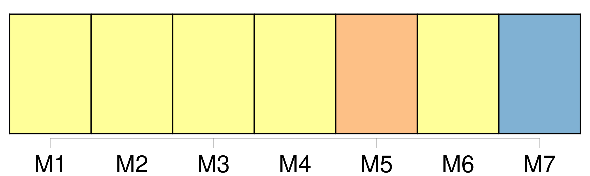
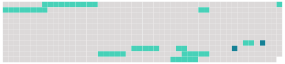

Longueur nb maillons : 11 mentions |
  |
Cette requête contient toutes indications utiles sur [la décision de suspension ou de retrait de l'habilitation]
Article R15-9
Le dossier d'officier de police judiciaire du requérant est adressé au secrétariat de la commission avec un rapport motivé du procureur général qui a pris [la décision] [10 phrases]
Article R15-14
Si le requérant n'est pas présent ou représenté lorsque [la décision de la commission] est rendue, [cette décision] lui est notifiée dans les quarante-huit heures de [son] prononcé par lettre recommandée avec demande d'avis de réception.
Le dossier de l'officier de police judiciaire, complété par une copie de [la décision de la commission] , est immédiatement renvoyé au procureur général qui a pris [la décision frappée de recours] [2 phrases]
Article R15-16 |
 |
La ressource peut être téléchargée sur la page Ortolang
Si vous avez des questions ou vous voyez des erreurs, merci d'envoyer un mail à silvia.federzoni89@gmail.com
Site développé par S. Federzoni (contact)